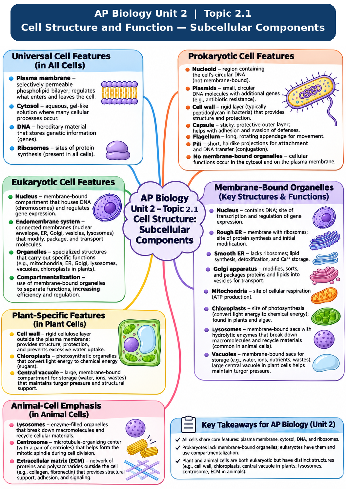
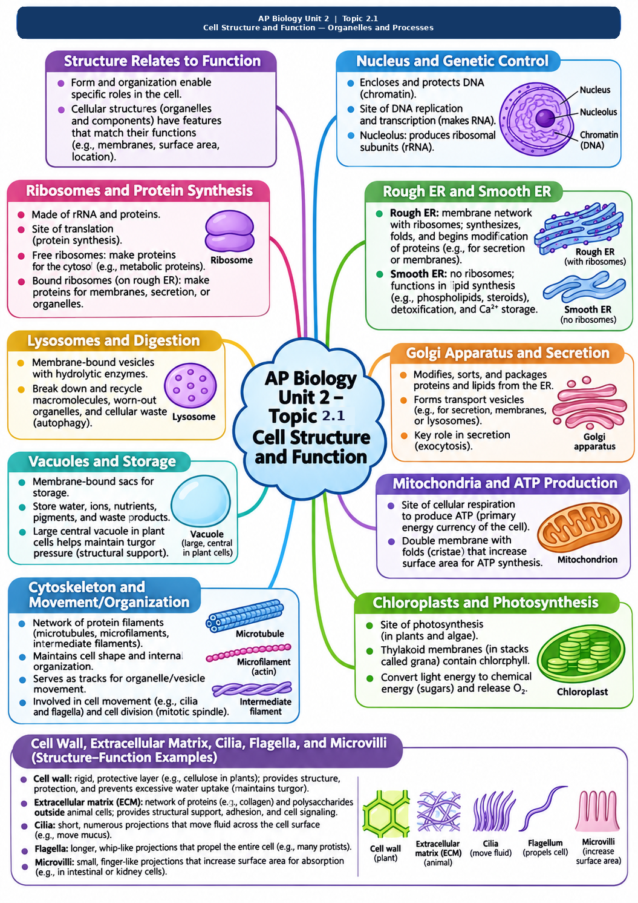
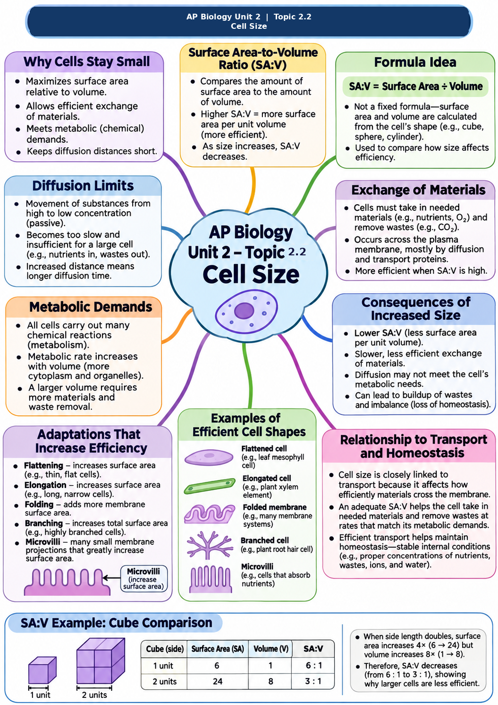
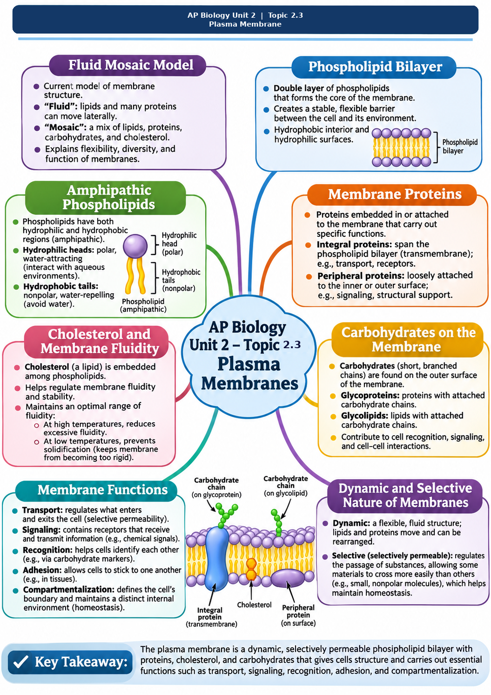
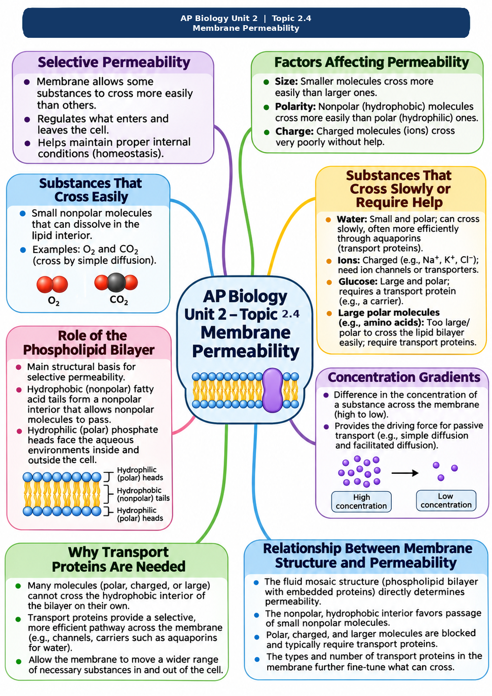
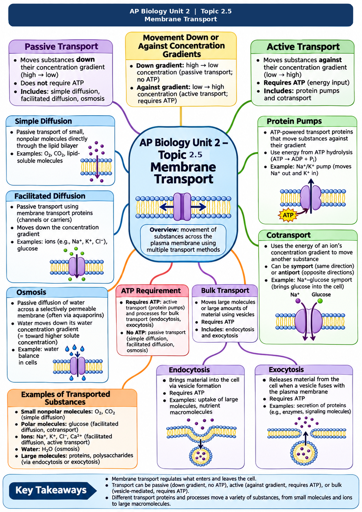
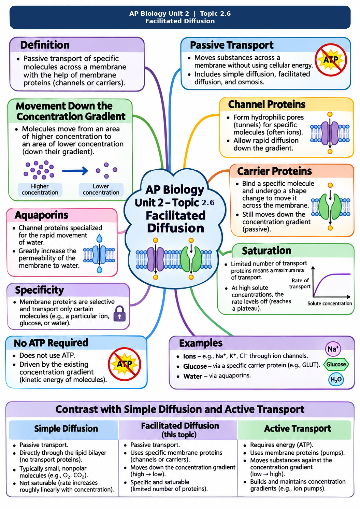
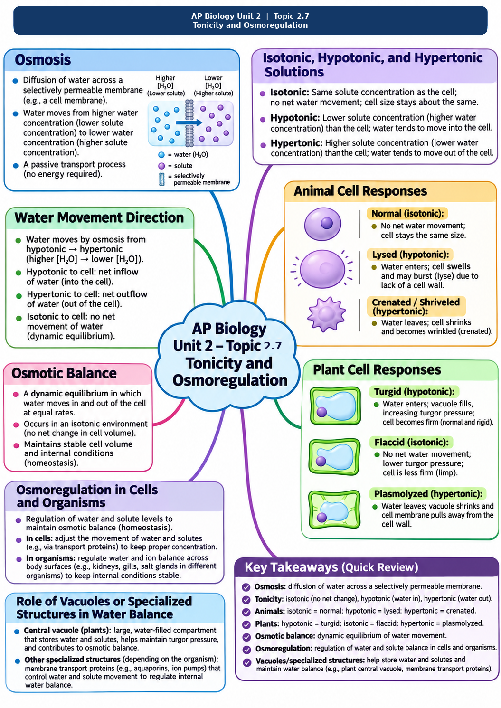
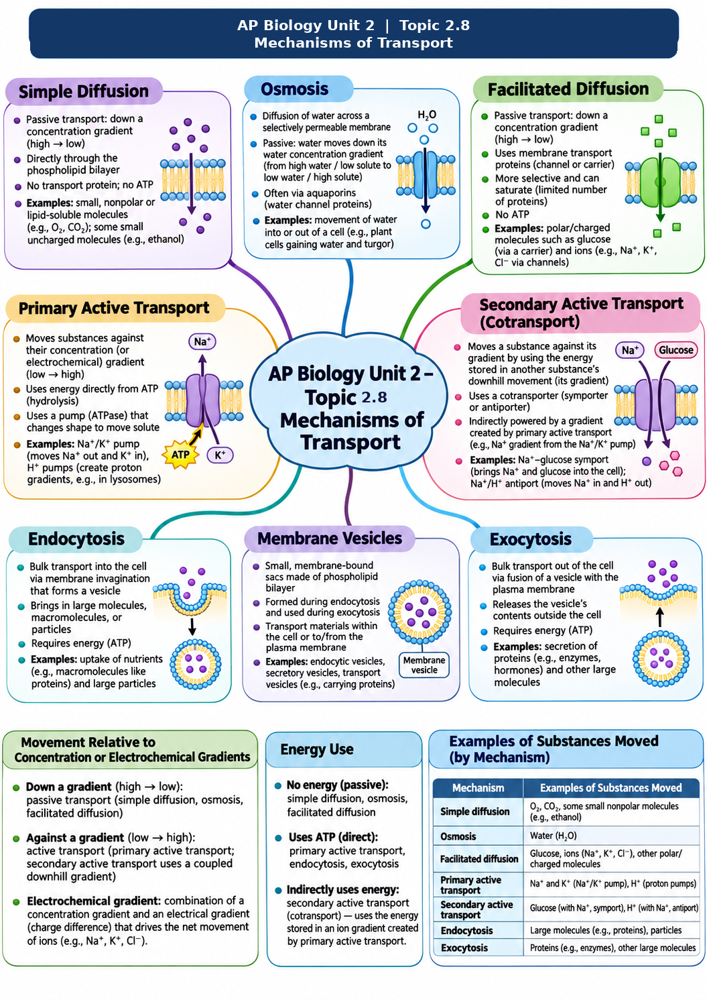
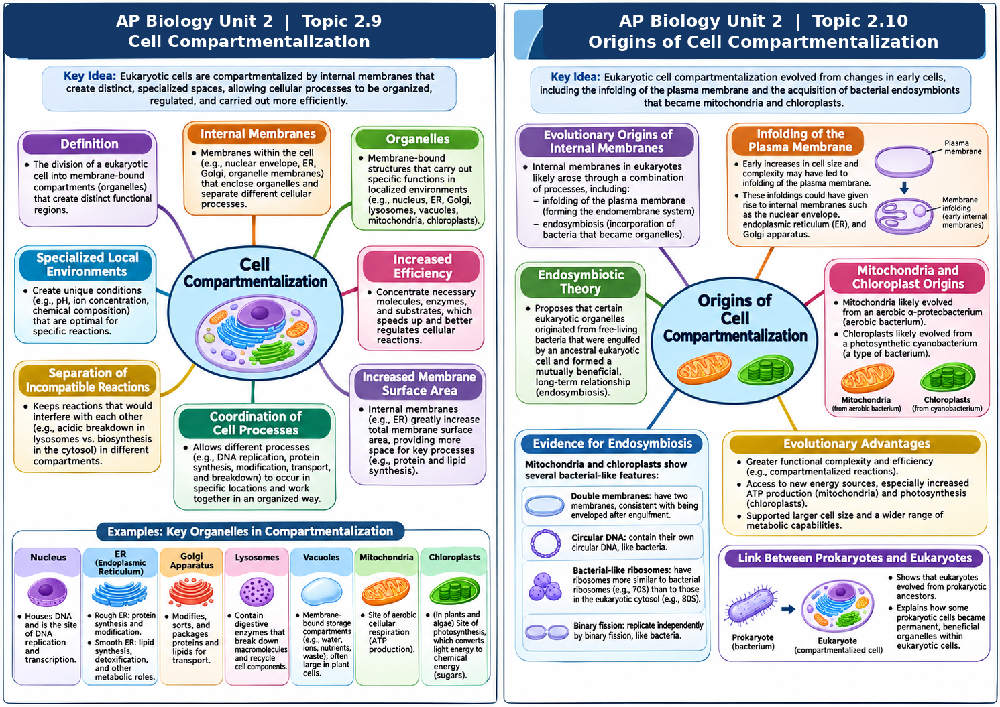

These ten one-page maps by the author summarize every Unit 2 topic. Use them for a fast review before a test: read the center first, then follow each branch outward and say how it connects to the topic. Topic 2.1 has two maps (cell components, then organelles and processes); Topics 2.9 and 2.10 share one.

Topic 2.1 · Cell Structure and Function: Subcellular Components

Topic 2.1 · Cell Structure and Function: Organelles and Processes

Topic 2.2 · Cell Size

Topic 2.3 · Plasma Membrane

Topic 2.4 · Membrane Permeability

Topic 2.5 · Membrane Transport

Topic 2.6 · Facilitated Diffusion

Topic 2.7 · Tonicity and Osmoregulation

Topic 2.8 · Mechanisms of Transport

Topics 2.9 and 2.10 · Cell Compartmentalization and Its Origins